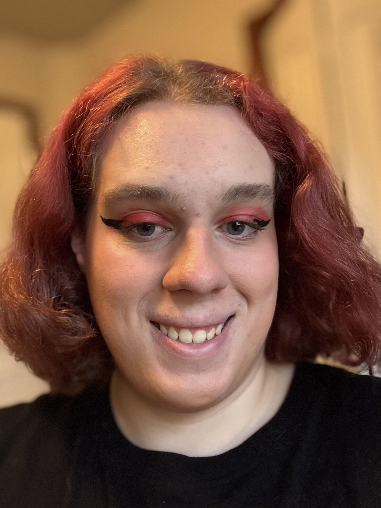

<!DOCTYPE html>
<html lang="en">
<head>
    <title>Portfolio · Audrey Arnel</title>
  
  <meta charset="utf-8" />
  <meta name="viewport" content="width=device-width, initial-scale=1" />
  <meta name="color-scheme" content="dark light" />
  <link rel="preconnect" href="https://fonts.googleapis.com">
  <link rel="preconnect" href="https://fonts.gstatic.com" crossorigin>
  <link href="https://fonts.googleapis.com/css2?family=Inter:wght@400;600;700&display=swap" rel="stylesheet">
  <link rel="stylesheet" href="index.css">
  <link rel="stylesheet" href="global.css">
  <link rel="stylesheet" href="resume.css">
  <meta name="description" content="Portfolio homepage for Audrey Arnel — bio, expertise, and contact." />
</html>

<body>
    <header>
        <div class="nav" role="navitagtion">
             <a class="brand" href="index.html"><span class="home"</span> <span>Audrey Arnel</span></a>
             <nav>
                <a href="index.html" id="nav-home">Home</a>
                <a href="resume.html" id="nav-resume">Resume</a>
                <a href="projects.html" id="nav-projects">Projects</a>
             </nav>
        </div>
    </header>

<main id="main" class="container">
    <section class="Mother">
        <div class="intro">
            <h1>Audrey Arnel</h1>
            <p class="summary">Aspiring neuropharmacologist and software creator. I design clear, accessible interfaces and build projects that bridge science and usability.</p>
        <div class="badges">
                <span class="badge">HTML5 & CSS3</span>
                <span class="badge">account management</span>
                <span class="badge">Culinary Arts</span>
                <span class="badge">Java</span>
        </div>
            <p class="Tabs">
             <a class="button" href="projects.html">View Projects</a>
             <a href="resume.html">See my resume →</a>
            </p>
        </div>

        <div class="media">
        
      </div>
</section>

<section class="profile">
    <h2>about me</h2>
    <p>I am currently studying chemistry with plans to pursue a PhD in Neuropharmacology, focusing on pharmacokinetics, metabolism, and harm reduction. Previously, my work centered on biochemistry and neuroreceptor interactions. Alongside my studies, I’ve begun developing Seroque, an early-stage project supporting graduate students, and I am also contributing to Alterd, where I create educational articles on dosing, culture, subjective effects, and detailed pharmacological insights into various substances. I’m seeking opportunities where I can apply my research, analytical, and communication skills while continuing to grow professionally.</p>
</section>
</main>

<footer>
    <div class="container">
       <div>© <span id="year"></span> Audrey Arnel · <a href="mailto:audrey.arnel06@gmail.com">audrey.arnel06@gmail.com</a></div>
</footer>


</body>


